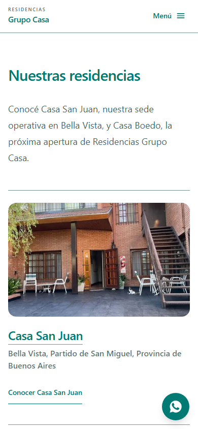
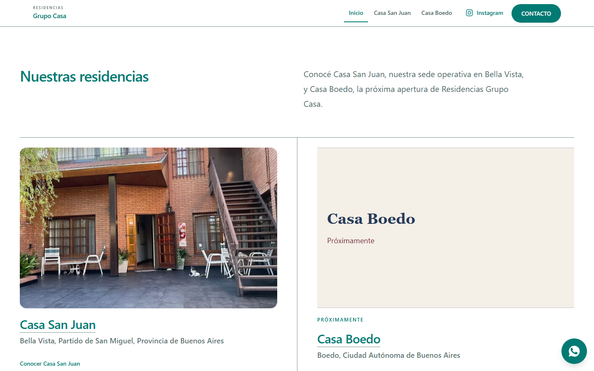

Sitios institucionales
Para presentar tu actividad, explicar tus servicios y reunir la información de contacto en una web clara, tanto en computadora como en celular.
Soy Ramiro Garcia. Trabajo con vos desde la definición de tu web hasta su publicación, con un alcance acordado para tu proyecto.
Hablemos de tu proyectoUna web nueva o una que necesita cambiar. El punto de partida es entender qué necesitás y definir el alcance.
Para presentar tu actividad, explicar tus servicios y reunir la información de contacto en una web clara, tanto en computadora como en celular.
Para un servicio, campaña o lanzamiento que necesita una página enfocada en explicar una propuesta y orientar al visitante hacia una acción principal.
Para una web que necesita mejorar su estructura, diseño o adaptación a celulares. Primero evalúo si conviene trabajar sobre la base actual o reconstruirla.
Según el alcance, puedo integrar adaptación a celulares, formularios y otras herramientas, SEO técnico, cuidado de la velocidad de carga y publicación.
¿Ya tenés un diseño? También puedo desarrollarlo, revisando primero las pantallas, los materiales y los comportamientos necesarios.
Caso real
Sitio institucional · En desarrollo
Una web para reunir al grupo y sus dos sedes: Casa San Juan y Casa Boedo. Ese fue el requerimiento inicial. Casa San Juan está operativa; Casa Boedo figura como próxima apertura.
Me encargué de la planificación, el diseño visual, la arquitectura y el desarrollo. La solución combina una entrada institucional con espacios diferenciados para cada residencia, a partir de sus identidades preexistentes.


El proyecto reúne diseño, desarrollo responsive, formularios y SEO técnico, además de la preparación para publicación. Las capturas muestran la interfaz; no representan métricas de resultados.
Full Stack Developer
Trabajo de forma independiente y directamente con cada cliente. Mi especialidad es frontend; también participo en UX/UI y decisiones de producto, y puedo trabajar full stack cuando el proyecto lo requiere.
Entender qué necesitás y en qué contexto. Definir juntos la estructura y el alcance.
Diseñar la interfaz y desarrollar una web funcional a partir de ella.
Revisar responsive, accesibilidad y performance. Publicar y comprobar la entrega en su entorno público.
Si el diseño es externo, reviso el material y los faltantes acordados.
Disponible para proyectos freelance.
GitHubEscribime por WhatsApp+54 9 11 5135-4489
Podés contarme qué necesitás, para qué, si ya tenés una web y compartir referencias o un plazo deseado. No hace falta tener todo definido para escribirme.